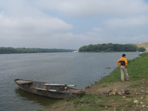

<div class="participate-content">
  <ion-row>
    <ion-col *ngIf="!menuBreakpoint" size-sm="4">
      
      <p class="image-caption"><b>Cristian Panfilov</b></p>
      <p class="image-caption">Director Logistic</p>
      <p class="image-caption push-bottom">Întreţinerea instalaţiilor, securitatea, diversele operaţiuni pentru sutele de oaspeţi nu sunt treburi uşoare, dar Cristian şi echipa lui le fac să pară la fel de simple ca o plimbare pe insulă într-o zi caldă de vară.</p>

      
      <p class="image-caption"><b>Paza de coasta</b></p>
      <p class="image-caption push-bottom">Acostare langa insula</p>

      
      <p class="image-caption push-bottom"><b>Gara de Nord</b></p>

      
      <p class="image-caption push-bottom"><b>Barca de la capidava</b></p>

      
      <p class="image-caption"><b>Cantina Atlantykron</b></p>

    </ion-col>

    <ion-col class="segment-main-content">
      <h1>ECHIPA DE ORGANIZARE</h1>
      <p>Academia atrage şi implică instructori proeminenţi în domeniile lor din Europa şi din lume. Participarea acestor  instructori, unii dintre cei mai buni, oferă o experienţă educativă şi de viaţă remarcabilă pentru tinerii care participă.</p>
      <p>La Academie, participanţii împărtăşesc nu numai ore de curs, dar şi experienţa de a trăi alături de aceşti specialişti, având ocazia de a fi în legătură cu ei şi de a învăţa despre multe aspecte ale vieţii în afara lecţiilor standard.</p>
      <p>Există de asemenea la faţa locului o echipă de organizare foarte bine structurată, care include coordonatori generali de programe, directori de logistică, coordonatori alternativi de programe, lideri de echipă şi echipe de securitate. Acest lucru asigură faptul că toate nevoile tinerilor care participă sunt înţelese şi rezolvate şi că au parte de o experienţă plăcută şi sigură.</p>
      <p>Toti coordonatorii de programe, instructorii, invitatii si intreaga echipa de organizare <b>isi oferta timpul si efortul in mod voluntar</b> pentru a le asigura participantilor o experienta cat mai placuta in cadrul Academiei. In acest fel putem mentine un cost scazut de participare si deschide oportunitatea de a participa in cadrul Academiei unei categorii cat mai largi de participanti.</p>

      <h1>CINE POATE PARTICIPA?</h1>
      <p>Academia este recomandată tinerilor cu vârsta între 16 și 29 de ani. Persoanele mai tinere de 16 ani pot participa doar însoțite de un adult. Adultul insotitor isi asuma intreaga responsabilitatea atat pentru comportamentul pe insula, cat si pentru pastrarea in siguranta a persoanei sub 16 ani. Persoanele cu vârsta de peste 29 de ani pot participa asumându-și faptul că programul este construit pentru tineri și că tot cadrul în care se desfășoară Academia este unul natural, condițiile fiind unele de camping.</p>
      <p>Oricine este interesat să participe trebuie să se înregistreze online pe adresa <a href='www.atlantykron.org/home' class="link"> www.atlantykron.org</a> folosind un profil de Facebook, Google sau o combinatie Email Parola. Inscrierea este finalizata doar dupa receptionarea emailului de acceptare.  Persoanele care nu pot prezenta un email valid de acceptare nu sunt acceptate in procedura de inregistrare a Academiei.</p>

      <h1>SECURITATEA INSULEI</h1>
      <p>Asigurarea unei perioade sigure şi relaxante este prioritatea principală a coordonatorilor Academiei. Caracteristic este faptul că, pe lângă paznicii devotaţi de pe insulă, Poliţia de Frontieră este în permanenţă prezentă pe insulă. În plus, fiecare instructor, lider de echipă şi coordonator de programe supraveghează toate activităţile, sprijinind echipele de securitate.</p>
      <p>Pentru siguranta noastra, a tuturor, <b>prezenta pe insula este permisa doar persoanelor inregistrate si care poarta bratara intr-un loc vizibil</b>. In prima zi inregistrarea participantilor se face la Cernavoda, conform programului oficial. In orice alta zi, este indatorirea participantilor sa contacteze echipa de inregistrare in cel mai scurt timp de la sosirea pe insula.</p>

      <h1>TRANSPORT</h1>
      <p>Aranjaţi cu organizatorii Academiei să vă întâlnească şi să vă conducă la locul de desfăşurare al programului. Ne puteţi contacta la <span class="attention">inscrieri@atlantykron.org</span>.</p>
      <p>Folosiţi sistemul public de transport din România (vezi instrucţiunile):</p>
      <p>De la aeroport luaţi un taxi până la Gara de Nord din Bucureşti. Durata călătoriei este de aproximativ 25 de minute iar preţul în jur de 16 € (Euro) sau 55 RON (Lei noi)</p>
      <ol>
        <li>
          <p>
            De la Gara de Nord din Bucureşti, luaţi un tren rapid către Cernavodă. Această călătorie va dura circa două ore şi va costa cam 12 € sau 42 RON.
          </p>
        </li>
        <li>
          <p>
            De la gara Cernavodă trebuie să ajungeţi în satul Capidava, pentru care există două opţiuni: luaţi autobuzul care pleacă de două ori pe zi, la 11:30 şi la 15:30, sau un taxi pentru a parcurge ultimele 25 de minute până în sat.
          </p>
        </li>
        <li>
          <p>
            Din sat se merge puţin pe jos şi faceţi un drum scurt cu barca până la insula Academiei, vizibilă în mijlocul fluviului Dunărea
          </p>
        </li>
      </ol>
      <p>Din interiorul României: Luaţi trenul sau taxiul până în oraşul Cernavodă, gara cea mai apropiată de Academie, apoi urmaţi paşii 2 şi 3 de mai sus.</p>
      <p>Cu automobilul personal: Se poate ajunge cu automobilul până în apropierea insulei, dar acest lucru nu este încurajat. Deoarece este un loc sălbatic, Academia nu poate răspunde pentru pierderile şi daunele care se pot întâmpla în locurile de parcare din afara insulei</p>

      <h1>SUNTEM „RUSTICI”</h1>
      <p>Participarea la acest program într-un decor sălbatic e o parte din ceea ce face ca Academia să fie o experienţă specială de viaţă şi de educaţie. Este de asemenea important să înţelegeţi care sunt condiţiile. Ceea ce urmează oferă nişte date generale. Dacă aveţi întrebări, vă rugăm contactaţi-ne la <span class='attention'>info@worldgenesis.org</span>.</p>

      <h1>HRANĂ ŞI IGIENĂ</h1>
      <p>Masa este disponibilă din partea Academiei de două ori pe zi. Vezi formularul de înscriere pentru detaliile legate de preţ. În plus, există o cafenea în aer liber instalată pe insulă, deschisă zilnic între 07:00 şi 24:00, unde se pot cumpăra alimente, băuturi şi alte mărfuri.</p>
      <p>De asemenea, se asigură apă îmbuteliată pentru toţi participanţii. Deşi apa locală este sigură pentru spălat, este important să vă aduceţi aminte că nu este bună de băut. În anumite locuri de pe insulă sau pe bacuri sunt disponibile duşuri.</p>

      <h1>CAZARE</h1>
      <p>În general toţi participanţii dorm în corturi, în zona grupului lor de pe insulă. Participanţii sunt încurajaţi să-şi aducă propriile corturi şi saci de dormit. Dacă nu puteţi face rost de un cort, vă rugăm menţionaţi acest lucru când vă înscrieţi şi organizatorii vor încerca să vă ajute.</p>
      <p>Cabinele de pe bacurile ancorate la malul insulei sunt disponibile pentru unii dintre invitaţi. Cu toate acestea, este important să notaţi că numărul lor este limitat. Dacă aveţi nevoi speciale care presupun cazarea într-o cabină, vă rugăm indicaţi acest lucru în formularul de înregistrare.</p>

      <h1>DEPOZITAREA DEŞEURILOR</h1>
      <p>Protejarea mediului pe insulă este foarte important pentru Academie. Instrucţiunile pentru depozitarea gunoiului vor fi date tuturor participanţilor la sosire. De asemenea, pe insulă şi pe bacuri sunt disponibile toalete pentru uzul participanţilor.</p>

      <h1>PARTICIPANŢII</h1>
      <p>Una dintre cele mai bune părţi ale Academiei sunt oamenii pe care-i veţi cunoaşte. Mereu un mediu prietenos, puteţi fi siguri că vă veţi face mulţi noi prieteni în timpul evenimentului. Principalele limbi folosite sunt româna şi engleza. O estimare ar fi că 50% dintre participanţi vorbesc bine engleza, 25% mediu şi 25% cu oarecare dificultăţi. Dacă este nevoie, oricine este dispus să dea o mână de ajutor la traduceri. Desigur, există multe ocazii de a-ţi perfecţiona cunoştinţele în multe alte limbi cu ajutorul marii varietăţi de participanţi.</p>

      <h1>O ZI TIPICĂ</h1>
      <p>După micul dejun încep programele de dimineaţă, care durează până la masa se prânz. După aceea toţi participanţii îşi petrec timpul liber pe plajă, citind, învăţând, practicând sporturi sau doar vorbind cu prietenii. La mijlocul după-amiezii reîncep programele, care ţin până la cină, apoi au loc prezentările şi spectacolele în amfiteatrul în aer liber. Programul de seară mai include o trecere în revistă a evenimentelor zilei următoare şi este urmat de obicei de un film sau dans la bordul unui bac.</p>

    </ion-col>
  </ion-row>
</div>